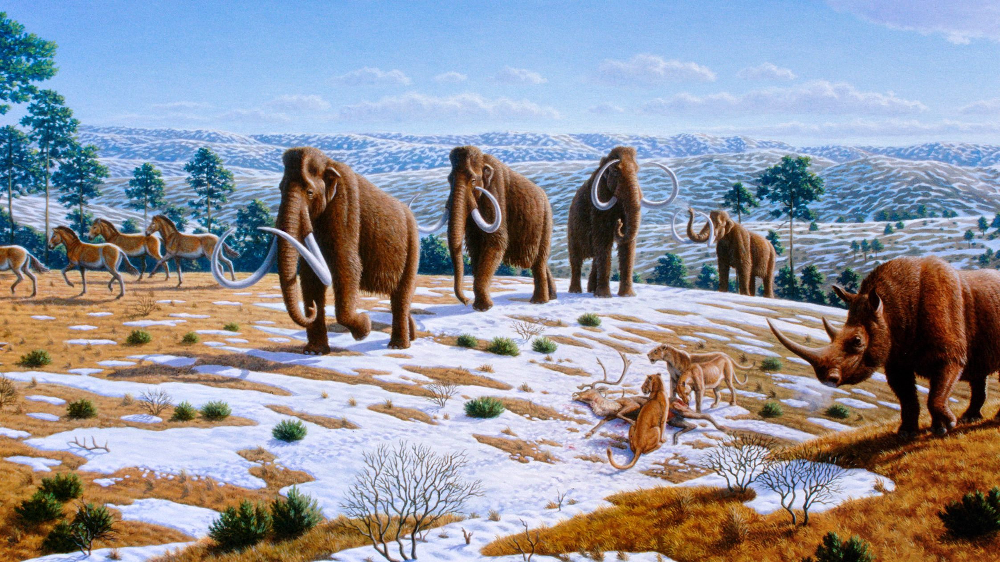

In its 4.54 billion years, Earth's history predates way before we, humans, set foot on its soil. Time marched forward, giving way to evolutionary change which brought us to the world we have today. With that said, I believe it is a necessity that we acknowledge the geological periods of this world's ancestry and ours.